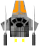
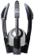

The game does not have an end. Levels just get slowly more and more difficult. The goal is to reach as many points as possible before the last life is lost.
As in the original asteroids game, a big comet gets split into 2 medium comets when hit, and a medium one gets split into 2 small ones when hit. A small ones finally just evaporates on destruction.
Beside the comets, there are more objects appearing and flying around. Some of them are enemies, others are useful extras.
| Ships: | ||
|---|---|---|
|  | Spaceship | A spaceship is the craft you are controlling. It flies and glides in space just getting slowly slower while drifting in space. The navigation key Up will fly forward, adding a throttle thrust in the viewing diration to the current drifting direction. Key Down will faster get to a halt. Left and right just turns the ship. The Fire key fires the current combination of weapons. The Shield key activates the shield of the ship to protect it agains any kind of destruction. The flying ship and its shot will wrap around the edges of the viewing space (the universe). |
| Enemies: | ||
| Danger | A danger can appear when a comet gets destroyed. It flies towards the nearest spaceship. Shoot it or use your shield to protect you from getting destroyed. | |
|  | Enemy | An enemy appears from time to time on an edge of the universe and shoot at the closest spaceship. |
| Mine | A mine also appears from time to time on an edge of the universe. It just drifts in space and once gets hit or shot will explode with a heavy ring of wave which will destroy everything in its reach. | |
| Extras: | ||
| Extra | An extra can appear when a comet gets destroyed, or when a ship gets destroyed. Collect an extra by flying over it and you receive ad advantage. There are different colors of extras. Red extra: It will increase your weaponry. Blue extra: It will give you a guard orbiting the ship. You can have up to 3 guards. Green extra: It will give you a protector orbiting the ship. You can have up to 3 protectors. Yellow extra: It will make your ship automatically activate the shield whenever a dangerour situation is being detected. You will still be able to activate the shield with the Shield key just the same. Dark extra: Each time you pick one up, it will make you keep one more of the other extras when your ship gets destroyed and respawned. First it will keep the weaponry, then the guards, then the yellow extra. | |
| Weapons: | ||
| Shot 1 | This is a spaceship's initial shot. | |
| Shot 2 | Just a slightly bigger shot to easier hit a target. | |
| Laser | A huge, fast and longer ranging shot which makes hitting a target a breeze. | |
| Missile | A homing missing which will lock on and fly towards the closest target it can detect. | |
| Protections: | ||
| Guard | It orbits the ship it is attached to and locks on to the closest approaching dangerous object. A guard destroys the dangerous object when it gets hit, thus protecting your ship. A guard disappears when it got hit 3 times. | |
| Protector | A protector is similar to a guard, just that it is orbiting in a slightly bigger radius around the ship, it moves and aims faster than a guard, and it will never get lost, not even when the ship gets destroyed and respawned, and that independent if a dark extra was picked up or not. | |